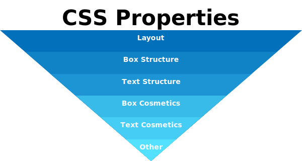
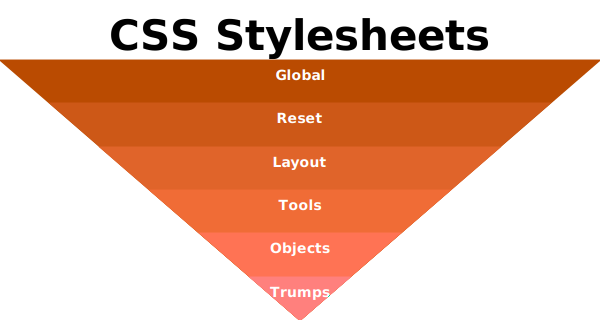

<!DOCTYPE html>
<html lang="en" xmlns="http://www.w3.org/1999/xhtml"></html>
<head>
  <title>CSS Architecture</title>
  <meta charset="UTF-8">
  <meta name="author" content="Christopher H. Harvey">
  <meta name="description" content="A brief summary on how to organize your CSS.">
  <meta name="keywords" content="lists, ordered, unordered, association">
  <link rel="stylesheet" href="../bower_components/normalize.css/normalize.css">
  <link rel="stylesheet" href="../bower_components/xmeter/xmeter.css">
  <link rel="stylesheet" href="../core/styles/project.css">
</head>
<body class="t-GoldenBody t-GoldenBody--Right">
  <main data-status="draft" itemscope="" itemtype="https://schema.org/Article" class="o-Content c-Document c-Document--draft">
    <header>
      <h1 itemprop="name headline">CSS Architecture</h1>
      <p class="o-Sidebar o-Sidebar--Minor o-Box o-Box--Island c-Alert c-Alert--Dang">This document is a work in progress.</p>
      <dl class="c-Document__Meta">
        <dt>Author</dt>
        <dd itemprop="author">Christopher H. Harvey</dd>
        <dt>Description</dt>
        <dd itemprop="description">A brief summary on how to organize your CSS.</dd>
        <dt>Keywords</dt>
        <dd itemprop="keywords"><abbr title="Cascading StyleSheets">CSS</abbr></dd>
        <dd itemprop="keywords">code organization</dd>
        <dt>Version History</dt>
        <dd class="update">
          <time datetime="2015-03-27">Mar 27, 2015</time>
        </dd>
        <dd itemprop="dateModified" class="update">
          <time datetime="2015-04-09 17:54">Apr 8, 2015 <span class="tod">5:54 PM</span></time><span class="o-Textbox c-Label c-Label--Dang">Latest</span>
        </dd>
      </dl>
    </header>
    <p class="c-Lede">
      Define properties, selectors, and stylesheets in order of increasing specificity.
      Based off of <a rel="external" href="http://itcss.io/">Harry Roberts&rsquo;s Theory of ITCSS</a>.
    </p>
    <section>
      <h2>Property Order</h2>
      <p>
        CSS properties should be grouped by order of decreasing structure definition.
        The inverted pyramid below illustrates how CSS properties are related.
      </p>
      <p>
        The top base of the pyramid contains properties that set up foundation and structure,
        such as display and position. The middle contains content, font, and text properties.
        Notice how container is defined before content. Then we finish with low-level
        cosmetic properties, such as color, at the vertex on the bottom.
      </p>
      <p>
        Authors are encouraged to define properties within a CSS block or ruleset in the order shown
        from top to bottom in the pyramid. This pyramid can be used to serve another purpose, however:
        CSS classes can be split into designated responsibilities, that is, authors may use
        separate classes for structural vs. textual vs. cosmetic properties. This makes the CSS
        more modular and reusable.
      </p>
      <p>Use this outline as a guide to ordering/grouping CSS properties.</p>
      <p><small><strong>Note:</strong> This is not a complete list of all CSS properties.
          If a property is not listed, use your best guess for where to place it.</small></p>
      <ol>
        <li>structural properties:
          <ol>
            <li>display</li>
            <li>width, height</li>
            <li>box-sizing</li>
            <li>padding</li>
            <li>border-width</li>
            <li>margin</li>
            <li>positioning and float</li>
            <li>z-index</li>
            <li>transformations</li>
          </ol>
        </li>
        <li>textual properties:
          <ol>
            <li>content and counter</li>
            <li>font</li>
            <li>line-height</li>
            <li>letter-spacing</li>
            <li>text-align</li>
            <li>text-indent</li>
            <li>white-space</li>
            <li>list-style</li>
          </ol>
        </li>
        <li>cosmetic properties:
          <ol>
            <li>border-style</li>
            <li>border-color</li>
            <li>border-radius</li>
            <li>outline</li>
            <li>box-shadow</li>
            <li>text-transform</li>
            <li>text-decoration</li>
            <li>text-shadow</li>
            <li>color</li>
            <li>background</li>
            <li>opacity</li>
            <li>visibility</li>
            <li>overflow</li>
            <li>cursor</li>
            <li>transition</li>
          </ol>
        </li>
      </ol>
    </section>
    <section>
      <h2>Stylesheet Order</h2>
      <p>
        The previous section discussed organizing CSS at a lower level: organizing properties
        within any given selector or grouping properties into separate selectors by responsibility.
        This section discusses CSS at a higher level: different types of stylesheets and the order
        in which to load them into your project.
      </p>
      <section>
        <h3>Metrics</h3>
        <p>
          There are 3 metrics on which to base your organization of your stylesheets.
          This section is a more abstract discussion. See the next section for a tangible examples.
        </p>
        <section>
          <h4>Generic &rarr; Explicit</h4>
        </section>
        <section>
          <h4>Far-Reaching &rarr; Localized</h4>
        </section>
        <section>
          <h4>Low Specificity &rarr; High Specificity</h4>
        </section>
      </section>
      <section>
        <h3>Categories of Stylesheets</h3>
        <p>
          Stylesheets should be imported in order from most generic to least generic.
          It is recommended to split stylesheets into the following categories.
        </p>
        <ol>
          <li>global project settings (<code>@import</code>s, frameworks, site-wide number and color constants)</li>
          <li>helper tools (math functions, mixins for vendor-specific css, fallbacks)</li>
          <li>unclassed base elements</li>
          <li>objects (structural patterns, layout, containers, etc.)</li>
          <li>components (specific pieces of UI with look-and-feel)</li>
          <li>utilities (trumps, hacks, states, anomalies, special cases, <code>!important</code>, etc.)</li>
        </ol>
        <section>
          <h4>Settings</h4>
          <p>
            The Settings stylesheet contains all the variables, functions, and constants that
            you want accessible throughout the entire project. Since it&rsquo;s imported first,
            every subsequent stylesheet has access to it.
          </p>
          <p>This stylesheet is where you <code>@import</code> any other frameworks (normalize, resets, etc.).
            Imports should be at the top.
          </p>
          <p>
            After imports, include global site-wide constants such as main font size, line-height,
            font families, colors, and spacing constants that give the site its look and feel.
            They may be changed here.
          </p>
        </section>
        <section>
          <h4>Tools</h4>
          <p>
            Tools are used only for encapsulating repetitive tasks. They should not be accessible
            to HTML elements (thus they should be mixins, not classes), but they may be used in
            subsequent stylesheets. There are 3 types of tools.
          </p>
          <section>
            <h5>Math Functions</h5>
            <p>
              Math functions make doing mathematical operations easier. For example you may want
              to define a function that averages two numbers evenly, or that adds a transparent
              factor (alpha) to an rgb color. These functions are content-ambiguous by nature,
              and do not produce actual CSS properties. They only take input values and produce
              output values.
            </p>
          </section>
          <section>
            <h5>Fallback Tools</h5>
            <p>
              Fallback tools are exactly that. They are mixins that you want to use to
              encapsulate fallback rules or vendor-specific rules. These mixins <em>do</em> produce
              actual CSS, but only if they&rsquo;re included in a CSS selector. Displaying a
              flexbox, for example, needs to support multiple browsers and/or a fallback for
              browsers not supporting it. Rather than repeating the same handful of rules over
              and over again, use a tool that will automate this task.
            </p>
          </section>
          <section>
            <h5>Modules</h5>
            <p>
              Modules are small tools that make your life easier. Like fallback tools, modules
              combine multiple properties to achieve an effect, except that these properties
              aren&rsquo;t all variations of the same thing. They are actually different
              properties that when combined take care of one task. One example is the
              <code>.font-size-block()</code> tool.
            </p>
            <pre>.font-size-block(@ratio) {
  font-size: (@ratio * 1rem);
  line-height: (@project_line_height / @ratio);
  // @project_line_height is a global variable defined in the Settings sheet
}</pre>
            <p>
              This mixin sets the font size of a block and adjusts its line height such that
              the total height of the block will be an integer multiple of the project line height.
              This is a common Tool used to maintain vertical rhythm.
            </p>
            <p>
              Other similar examples include a module that adds a bottom border to an Element but
              removes an equivalent amount of bottom margin, or a brand font module that requires
              <code>font-weight: bold;</code> every time a certain font family is set.
            </p>
            <p>Modules can also be thought of as pieces of <a rel="this" href="#objects">Objects</a>
              and <a rel="this" href="#components">Components</a>, or <i>Legos</i> that are used
              repetitively throughout the project. They utilize reusable and abstract design patterns,
              but do not describe whole Objects or Components. More examples include a type of border
              used as a particular theme, or a particular amount of padding on a box.
            </p>
            <p>
              Again, modules should not be accessible to HTML Elements. They should be mixins that
              you include in your Less selectors. If a certain Object needs to use a module (or any Tool),
              include it in that Object&rsquo;s class definition.
            </p>
          </section>
        </section>
        <section>
          <h4>Base</h4>
          <p>
            The Base stylesheet is the first stylesheet with real selectors. This is what shows up
            first in the compiled output CSS. All its selectors are unclassed HTML Elements.
            Think of it as a tailored normalize stylesheet for your project typography. If your
            project Settings sheet imports other frameworks, this stylesheet will build on top of
            those frameworks. This stylesheet is very broad and general, because it comes early
            in the cascade and is likely to be overridden later.
          </p>
        </section>
        <section>
          <h4>Objects</h4>
          <p>
            Objects are generic classes that provide cosmetic-free layout and structure for a page
            and its Elements. Any layout or grid system classes should go here, as well as other
            classes that are used to define an Element&rsquo;s structure without relying on context.
            Examples include the Media Object, the Nav Abstraction, and the Island Object. All
            of these objects determine layout and/or structure, but do not affect look-and-feel.
          </p>
        </section>
        <section>
          <h4>Components</h4>
          <p>
            Components are recognizable pieces of UI that have a particular look-and-feel.
            Buttons, breadcrumb lists, labels, and tags are all good examples. These classes are
            built on top of Objects, but they also provide cosmetics for the Element.
          </p>
          <p>
            In a way, the semantics of a component is derived from its presentation (cosmetics).
            That is, the look-and-feel of an Element may determine its meaning in terms of usability.
            For example, a <code>span.label</code> might not look like anything with styles turned off,
            but with them on it might clearly represent a label attached to a link or something.
          </p>
          <aside>
            <p>
              Objects and Components are actual CSS classes that can be applied to
              HTML Elements. In OOP-speak, Objects and Components are classes that Elements can
              <i>instantiate</i>. Tools, on the other hand, should not be accessible to HTML Elements,
              only to CSS classes. Tools are more analogous to interfaces instead of classes.
              Elements cannot instantiate interfaces but classes can implement them.
            </p>
            <p>
              An Object or a Component itself may not be one semantic Element; it may be a grouping
              of semantic Elements. For example it may contain an image, heading,
              and paragraph. The Object/Component as a whole though is simply a <code>div</code>.
            </p>
          </aside>
        </section>
        <section>
          <h4>Utilities</h4>
          <p>Overrides, helper classes, hacks, and things that use <code>!important</code>.</p>
        </section>
      </section>
    </section>
  </main>
</body>
